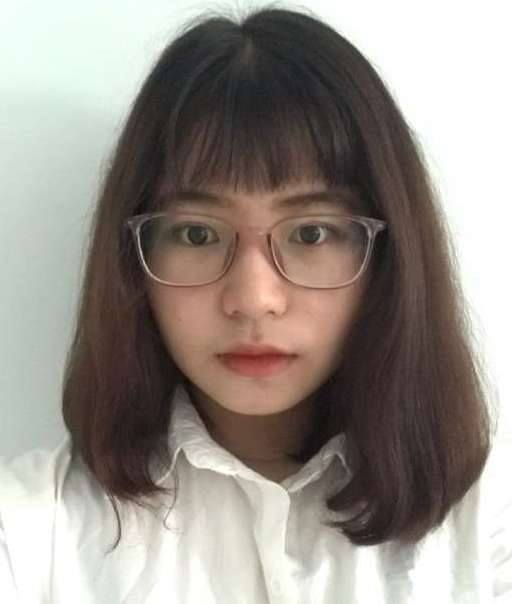
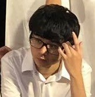

1. Team Name: Alert Campainers
Because of unexpected change, our groups shift into 3 members. Hence, the KOVI Campaigners is not our team name anymore because we do not have a Korean partner. We change into Alert Campaigners, the excuse is most people do not pay attention to the damaged effect that COVID-19 potentially causes on account of the decrease of the cases in RMIT individuals and Vietnam in general. We came up with the Project idea which guides people stay alert and raise awareness of the COVID-19 implicit community infection, from which to have a prevention for a society.
2. Personal Information:
- - Trang: 
- - Khanh: 
- - Thinh:
My name is Pham Hoai Mai Trang, s3836323 is my student number and absolutely it is used for my email account s3836323@rmit.edu.vn. My nationality is Vietnamese but I am not Saigonese. I am from Vung Tau city, which is more tranquil than Ho Chi Minh city because of the beach. It is over one kilometer from Saigon to my hometown and takes an hour and a half to move. An introverted character describes me a lot not only in every relationship. But if this environment requires me to affiliate with teammates, I can balance my energy, my mood following specific situations, and after that I will return my original version of myself. About my hobbies, I spend most of my time practicing guitar and connecting with my intuition. The most valuable lesson I remind myself is your value is defined via your enlightenment and your personality in any circumstance. Honestly, I do not have the entire background about IT (Information Technology), but I am interested in Turtlebot which is a low-cost individual robot developed by Melonee Wise and Tully Foote in 2010. I took inspiration from high school when I took part in an automatic technology competition.
My name is Ngo Nhat Khanh, and my student number is s3818414. Through-out 12 years of education in bilingual schools, I am able to use both Vietnamese and English competently. I’ve moved to different schools a few times: starting from AIS, then VAS, I spent a year in BCIS after finishing primary school in VAS but I ended up returning to VAS after just one year in BCIS and finished high school there, in VAS. I usually play games in my free time, I mostly play Dota 2 with my best friends, but there are times we’d just play other fun online co-op games. I also participate in the badminton club in RMIT when the club is available on certain days of the week. I have always been a video game enthusiast, which means I am very into learning about game development, as well as graphics design in video games. The process of creating a high-quality game has always been thrilling to me. I have little experience with web programming and creating games as I have learned these during secondary school but never got to learn about them again in the later years and up until now, so my skills are very rusty at the moment.
My name is Huynh Hung Thinh, my student ID is s3750559. My nationality is Vietnamese. In my free time, I love playing games, listening to music, playing chess or watching movies. About career interests, I love learning about AI, autonomous technology and machine learning. I also have some experience in arduino and working with python. Back when I was at high school, I was lucky enough to have a ticket to a tech talk and the topic was "How to learn AI as a beginner", the event was organized by TopDev and it was fascinating and so curious to know what AI can do in our life. And that event sparked my inspiration to become a software developer. I realized that there are so many things I can do with a computer and a lab, I can create many apps which improve our daily lives. And it would be greater if I can apply AI and machine learning, which I know it really requires a very advanced amount of knowledge to fully understand about it. But overall, becoming a software developer has always been my dream, and I will surely work hard for what I have been dreaming abou